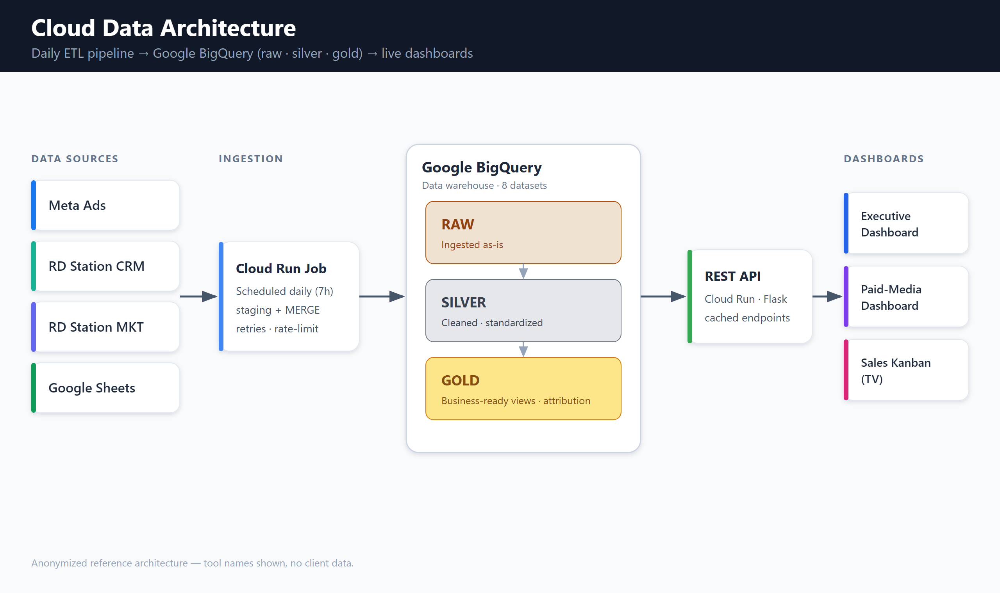

01 — Data Engineering
Cloud Data Architecture & Daily ETL Pipeline
A layered BigQuery warehouse — raw → silver → gold, 8 datasets — and the pipeline that feeds it. A scheduled Cloud Run job ingests Meta Ads, CRM and marketing data every day, using a staging + MERGE pattern with retries and rate-limit handling. The gold layer serves governed views, including ad-spend → closed-deal attribution.
